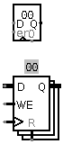

Register
Register
| Library: |
Memory |
| Introduced: |
2.0 Beta 1 |
| Appearance: |
| Classic Logisim: |  |
|---|
| ANSI: |
|---|
|
Behavior
A register stores a single multi-bit value, which is displayed in
hexadecimal within its rectangle, and is emitted on its
Q output. When the clock input
(indicated by a triangle on the south edge) indicates so,
the value stored in the register changes to the value of the
D input at that instant. Exactly when the clock input indicates
for this to happen is configured via the Trigger attribute.
The reset input resets the register's value to 0 (all
zeroes) asynchronously; that is, as long as reset
is 1, the value is pinned to 0, regardless of the clock input.
Pins (assuming "Classic Logisim" appearance)
- East edge, labeled Q (output, bit width matches Data Bits attribute)
- Outputs the value currently stored by the register.
- West edge, labeled D (input, bit width matches Data Bits attribute)
- Data input: At the instant that the clock value rises from 0 to 1,
the register's value changes to the value of the D input at
that instant.
- West edge, labeled en (input, bit width 1)
- Enable: When this is 0, clock triggers are ignored. The current value
continues to appear on the output. The clock triggers are enabled when this
input is 1 or undefined.
- South edge, indicated with a triangle (input, bit width 1)
- Clock input: At the instant that this input value rises from 0 to
1 (the rising edge), the register's value will be updated to the value
of the D input.
- South edge, labeled 0 (input, bit width 1)
- Asynchronous reset: When 0 or undefined, this input has no effect.
As long as it is 1, the register's value is pinned to 0. This occurs
asynchronously - that is, without regard to the current clock input
value. As long as this is 1, the other inputs have no effect.
Attributes
When the component is selected or being added,
Alt-0 through Alt-9 alter its Data Bits
attribute.
- Data Bits
- The bit width of the value stored in the register.
- Trigger
- Configures how the clock input is interpreted. The value
rising edge
indicates that the register should update its value at the instant when the
clock rises from 0 to 1. The falling edge
value indicates that it should
update at the instant the clock falls from 1 to 0. The high level
value
indicates that the register should update continuously whenever the clock
input is 1. And the low level
value indicates that it should update
continuously when the clock input is 0.
- Label
- The text within the label associated with the register.
- Label Font
- The font with which to render the label.
- Label Color
- The color with which to render the label.
- Include Enable?
- Whether the register should have a clock-enable input pin.
- Show in Registers Tab
- Whether the value of the register should appear in the "State" tab at the
bottom left of the canvas, which can be useful for seeing all of the state
values contained in a circuit at a glance.
- Appearance
- Selects between the "Classic Logisim" appearance style, which is somewhat
more compact, or "ANSI" style, which is more conventional but larger.
Poke Tool Behavior
Clicking the register brings keyboard focus to the register
(indicated by a red rectangle), and typing hexadecimal digits will
change the value stored in the register.
FPGA Synthesis
Supports VHDL and Verilog synthesis.
Up to Library Reference